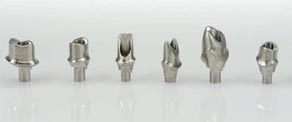

Single Tooth Abutment
Indications :
Single-unit implant restorations with limited interdental space
- Cement-retained
- All indications
- Individualized abutment design for superior esthetics
- For Nobel Biocare implants and other major implant systems
- Exceptional strength
- Miled from a solid monobloc
- Unlimited emergence profile (5-axis milling)
- All indications
- Cement-and screw-retained restorations
- Individualized abutment design for superior esthetics
- For Nobel Biocare implants and other major implant systems
- Strong and biocompatible
- In four shades: white, light, medium and intense
- Place the Impression Coping Implant Level onto the implant and make an implant level impression.
- Connect the healing abutment or temporary restoration and send the impression to the laboratory.
2. Laboratory procedures
A model is made, the abutment is modified if necessary, and a restoration is made.
Alternatives :
- NobelProcera Crown veneered with dental ceramics
- Conventional crown